한국사능력검정시험-심화 (2022-04-10 기출문제)
1. (가) 시대의 생활 모습으로 옳은 것은? [1점]
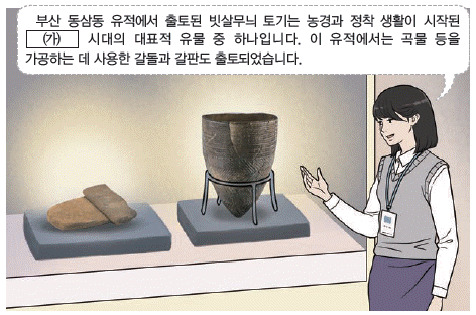
- 가락바퀴를 이용하여 실을 뽑았다.
- 주로 동굴이나 막집에서 거주하였다.
- 명도전, 반량전 등의 화폐가 유통되었다.
- 거푸집을 이용하여 세형 동검을 만들었다.
- 쟁기, 쇠스랑 등의 철제 농기구를 사용하였다.
(정답률: 89%)

2. (가) 나라에 대한 설명으로 옳은 것은? [2점]
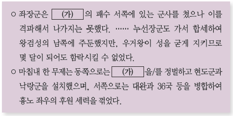
- 동맹이라는 제천 행사를 열었다.
- 신지, 읍차라 불린 지배자가 있었다.
- 도둑질한 자에게 12배로 배상하게 하였다.
- 읍락 간의 경계를 중시하는 책화가 있었다.
- 왕 아래 상, 대부, 장군 등의 관직을 두었다.
(정답률: 60%)
3. 다음 상황이 전개된 배경으로 옳은 것은? [2점]
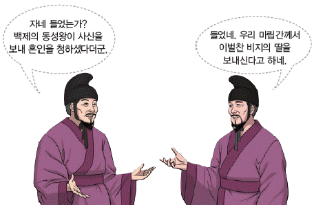
- 법흥왕이 금관가야를 병합하였다.
- 장수왕이 한성을 공격하여 함락시켰다.
- 김유신이 비담과 염종의 반란을 진압하였다.
- 영양왕이 온달을 보내 아단성을 공격하였다.
- 김춘추가 당으로 건너가 군사 동맹을 성사시켰다.
(정답률: 76%)
4. (가) 나라에 대한 탐구 활동으로 가장 적절한 것은? [3점]
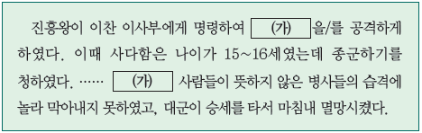
- 안동도호부가 설치된 경위를 찾아본다.
- 22담로에 왕족이 파견된 목적을 알아본다.
- 중앙 관제가 3성 6부로 정비된 계기를 파악한다.
- 최고 지배자의 호칭인 이사금의 의미를 검색한다.
- 고령 지역이 연맹의 중심지로 성장하는 과정을 조사한다.
(정답률: 60%)
5. 밑줄 그은 '전투'가 벌어진 시기를 연표에서 옳게 고른 것은? [2점]
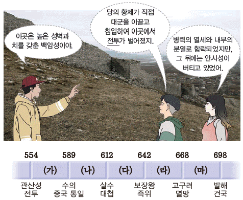
- (가)
- (나)
- (다)
- (라)
- (마)
(정답률: 55%)
6. (가), (나) 사이의 시기에 있었던 사실로 옳은 것은? [3점]
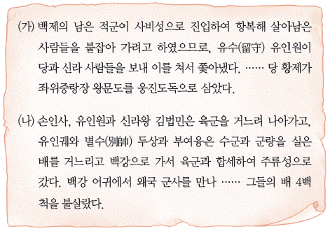
- 사찬 시득이 기벌포에서 당군을 격파하였다.
- 의자왕이 윤충을 보내 대야성을 함락시켰다.
- 복신과 도침이 부여풍을 왕으로 추대하였다.
- 계백이 이끄는 군대가 황산벌에서 항전하였다.
- 안승이 신라에 의해 보덕국왕으로 책봉되었다.
(정답률: 48%)
7. 밑줄 그은 '시기' 신라의 경제 모습으로 옳은 것은? [2점]
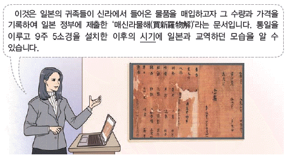
- 벽란도가 국제 무역항으로 번성하였다.
- 조세 수취를 위해 촌락 문서를 작성하였다.
- 철이 많이 생산되어 낙랑군 등에 수출하였다.
- 농업 생산력 증대를 위해 우경을 처음으로 시작하였다.
- 수도에 도시부(都市部)라는 관청을 설치하여 시장을 관리하였다.
(정답률: 53%)
8. (가) 국가에 대한 설명으로 옳은 것은? [1점]
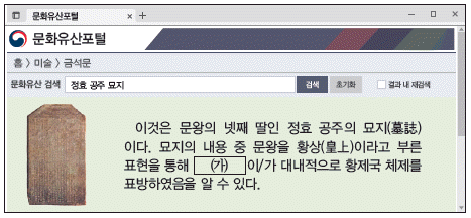
- 기인 제도를 실시하였다.
- 정사암 회의를 개최하였다.
- 최고 행정 관서로 집사부를 두었다.
- 주자감을 설치하여 인재를 양성하였다.
- 광덕, 준풍 등의 독자적인 연호를 사용하였다.
(정답률: 69%)
9. 다음 상황 이후에 전개된 사실로 옳은 것은? [2점]
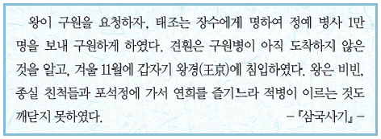
- 김흠돌이 반란을 도모하였다.
- 장문휴가 당의 등주를 공격하였다.
- 궁예가 국호를 태봉으로 바꾸었다.
- 원종과 애노가 사벌주에서 반란을 일으켰다.
- 경순왕 김부가 경주의 사심관으로 임명되었다.
(정답률: 51%)
10. 밑줄 그은 '이 시기'에 있었던 사실로 옳은 것은? [3점]
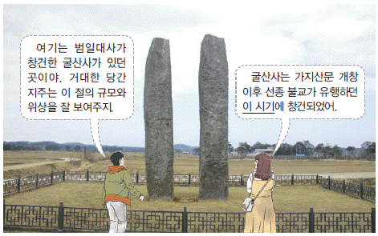
- 원광이 세속 5계를 제시하였다.
- 김대문이 화랑세기를 저술하였다.
- 김대성이 불국사 조성을 주도하였다.
- 최치원이 진성여왕에게 시무책을 올렸다.
- 자장의 건의로 황룡사 구층 목탑이 건립되었다.
(정답률: 50%)
11. 다음 시나리오에 등장하는 왕의 재위 기간에 있었던 사실로 옳은 것은? [2점]
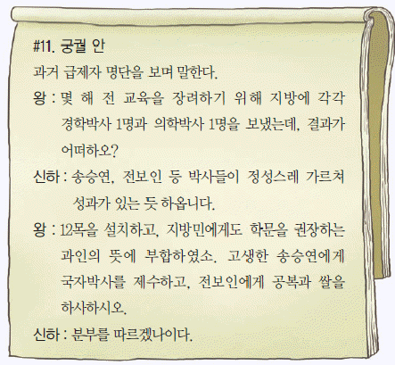
- 쌍기의 건의로 과거제를 실시하였다.
- 관학 진흥을 위해 양현고를 설치하였다.
- 국자감을 성균관으로 개칭하고 유학 교육을 강화하였다.
- 최승로의 시무 28조를 받아들여 통치 체제를 정비하였다.
- 정계와 계백료서를 지어 관리가 지켜야 할 규범을 제시하였다.
(정답률: 60%)
12. 다음 상황이 나타난 시기의 사회 시책으로 옳은 것은? [2점]
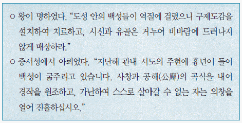
- 유랑민을 구휼하는 활인서를 두었다.
- 백성들에게 곡식을 빌려주는 진대법을 실시하였다.
- 국산 약재와 치료법을 소개한 향약집성방을 편찬하였다.
- 기근에 대비하기 위해 구황촬요를 간행하여 보급하였다.
- 기금을 모아 그 이자로 빈민을 구제하는 제위보를 운영하였다.
(정답률: 51%)
13. (가)의 침입에 대한 고려의 대응으로 옳은 것은? [2점]
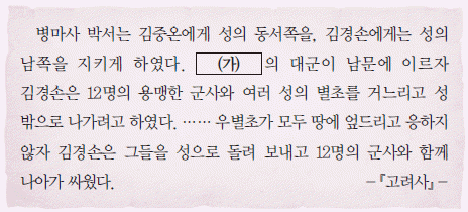
- 김종서를 보내 6진을 개척하였다.
- 서희를 보내 소손녕과 외교 담판을 벌였다.
- 별무반을 조직하고 동북 9성을 축조하였다.
- 강화도로 도읍을 옮겨 장기 항전을 준비하였다.
- 화통도감을 설치하여 화약과 화포를 제작하였다.
(정답률: 58%)
14. 다음 대화가 이루어진 시기의 경제 상황으로 옳은 것은? [1점]
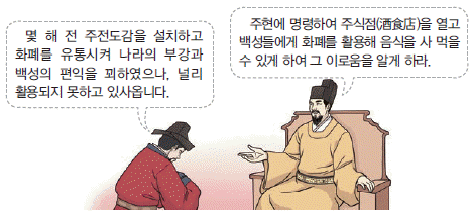
- 활구라고 불리는 은병이 유통되었다.
- 특산품으로 솔빈부의 말이 유명하였다.
- 송상이 전국 각지에 송방을 설치하였다.
- 청해진을 설치하여 해상 무역을 전개하였다.
- 시장을 감독하는 관청인 동시전이 설치되었다.
(정답률: 64%)
15. 다음 검색창에 들어갈 역사 자료에 대한 설명으로 옳은 것은? [2점]
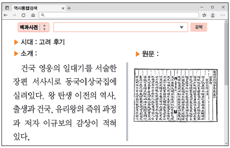
- 고구려 계승 의식이 반영되었다.
- 남북국이라는 용어가 처음 사용되었다.
- 사초, 시정기 등을 바탕으로 편찬하였다.
- 단군의 고조선 건국 이야기를 수록하였다.
- 현존하는 우리나라 최고(最古)의 역사서이다.
(정답률: 51%)
16. 다음 기획전에 전시될 문화유산으로 적절한 것은? [1점]
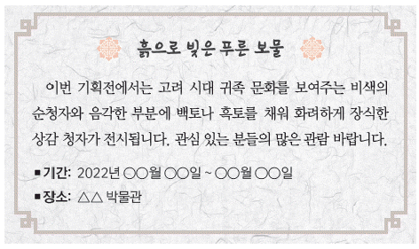
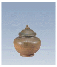
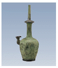
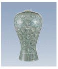
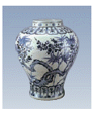
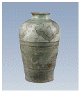
(정답률: 68%)
17. (가) 시기에 있었던 사실로 옳은 것은? [2점]
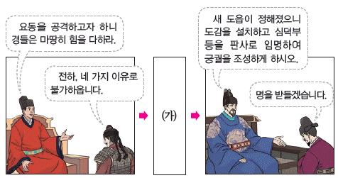
- 집현전을 계승한 홍문관이 설치되었다.
- 조준 등의 건의로 과전법이 제정되었다.
- 국가의 기본 법전인 경국대전이 완성되었다.
- 연분9등법을 시행하여 수취 체제가 정비되었다.
- 음악 이론 등을 집대성한 악학궤범이 간행되었다.
(정답률: 61%)
18. (가)에 대한 조선의 정책으로 옳은 것은? [2점]
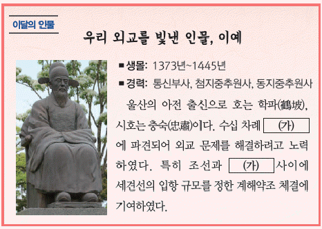
- 하정사, 성절사 등을 파견하였다.
- 경성, 경원에 무역소를 설치하였다.
- 광군을 조직하여 침입에 대비하였다.
- 부산포, 제포, 염포의 삼포를 개항하였다.
- 사절 왕래를 위하여 북평관을 개설하였다.
(정답률: 68%)
19. 밑줄 그은 '전하'의 재위 기간에 있었던 사실로 옳은 것은? [3점]
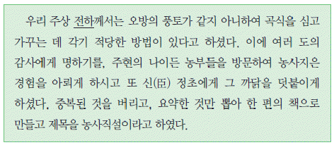
- 예학을 정리한 가례집람이 저술되었다.
- 국가의 의례를 정비한 국조오례의가 완성되었다.
- 아동용 윤리·역사 교재인 동몽선습이 간행되었다.
- 효자, 충신 등의 사례를 제시한 삼강행실도가 편찬되었다.
- 군주가 수양해야 할 덕목을 제시한 성학집요가 집필되었다.
(정답률: 59%)
20. (가) 기구에 대한 설명으로 옳은 것은? [1점]
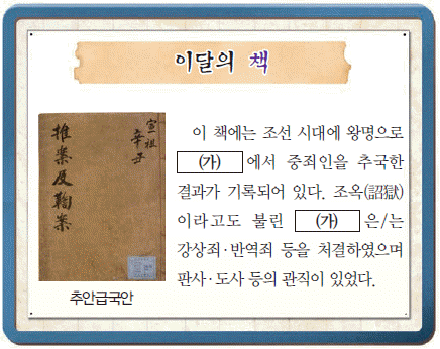
- 국왕 직속의 특별 사법 기구였다.
- 사림의 건의로 중종 때 폐지되었다.
- 사헌부, 사간원과 함께 삼사로 불리었다.
- 5품 이하의 관원에 대한 서경권을 행사하였다.
- 서얼 출신의 학자들이 검서관으로 기용되었다.
(정답률: 54%)
21. 밑줄 그은 '이 부대'에 대한 설명으로 옳은 것은? [2점]
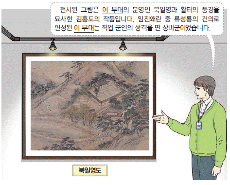
- 용호군과 함께 2군으로 불렸다.
- 진도에서 용장성을 쌓고 항전하였다.
- 국경 지역인 북계와 동계에 배치되었다.
- 포수, 살수, 사수의 삼수병으로 편제되었다.
- 국왕의 친위 부대로 수원 화성에 외영을 두었다.
(정답률: 66%)
22. (가), (나) 사이의 시기에 있었던 사실로 옳은 것은? [3점]
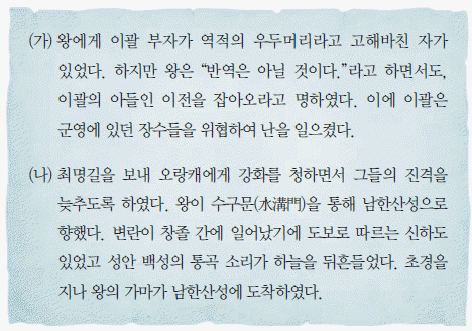
- 정봉수가 용골산성에서 항전하였다.
- 이순신이 명량에서 대승을 거두었다.
- 권율이 행주산성에서 적군을 격퇴하였다.
- 서인 세력이 폐모살제를 이유로 반정을 일으켰다.
- 정여립 모반 사건을 계기로 기축옥사가 발생하였다.
(정답률: 47%)
23. (가) 국가에 대한 조선의 대외 정책으로 옳은 것은? [2점]
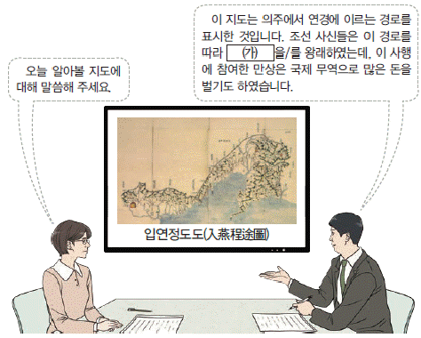
- 박위를 파견하여 근거지를 토벌하였다.
- 백두산정계비를 세워 국경을 정하였다.
- 한성에 동평관을 두어 무역을 허용하였다.
- 쌍성총관부를 공격하여 철령 이북의 영토를 되찾았다.
- 포로 송환을 위하여 유정을 회답 겸 쇄환사로 파견하였다.
(정답률: 42%)
24. 밑줄 그은 '이 왕'의 업적으로 옳은 것은? [2점]
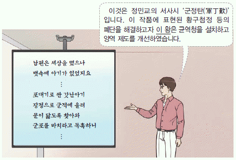
- 수도 방위를 위하여 금위영을 창설하였다.
- 속대전을 편찬하여 통치 제도를 정비하였다.
- 삼군부를 부활시켜 군국 기무를 전담하게 하였다.
- 초계문신제를 실시하여 젊은 문신들을 재교육하였다.
- 전세를 1결당 4~6두로 고정하는 영정법을 제정하였다.
(정답률: 49%)
25. (가)에 들어갈 내용으로 옳은 것은? [2점]
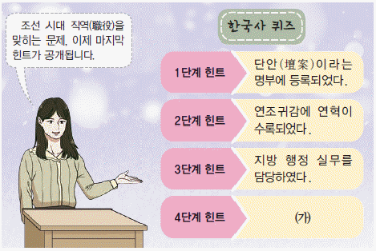
- 상피제의 적용을 받았다.
- 잡과를 통해 선발되었다.
- 감사 또는 방백이라 불렸다.
- 이방, 호방 등 6방에 소속되었다.
- 공음전을 경제적 기반으로 삼았다.
(정답률: 34%)
26. (가) 종교에 대한 설명으로 옳은 것은? [1점]
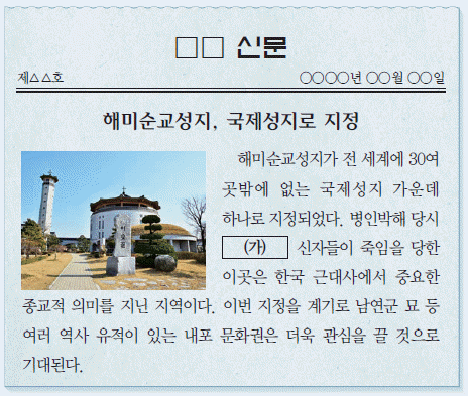
- 미륵불이 세상을 구원한다고 예언하였다.
- 동경대전과 용담유사를 경전으로 삼았다.
- 박중빈을 중심으로 새생활 운동을 전개하였다.
- 단군 숭배 사상을 통해 민족의식을 고취하였다.
- 청을 다녀온 사신들에 의하여 서학으로 소개되었다.
(정답률: 63%)
27. (가) 인물의 활동으로 옳은 것은? [2점]
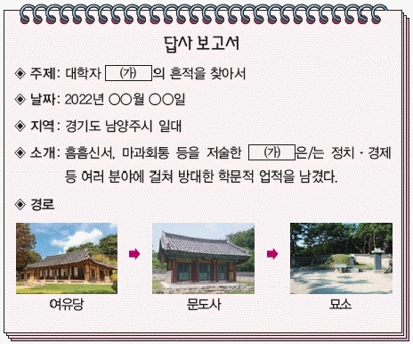
- 성호사설에서 한전론을 주장하였다.
- 양반전에서 양반의 허례와 무능을 지적하였다.
- 의산문답에서 중국 중심의 세계관을 비판하였다.
- 북학의에서 절약보다 적절한 소비를 권장하였다.
- 경세유표에서 국가 제도의 개혁 방향을 제시하였다.
(정답률: 47%)
28. 밑줄 그은 '시기'에 있었던 사실로 옳은 것은? [2점]
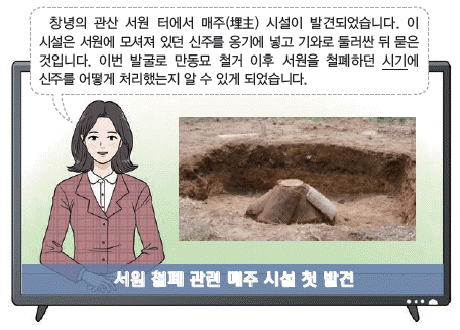
- 나선 정벌에 조총 부대가 동원되었다.
- 박규수의 건의로 삼정이정청이 설치되었다.
- 지역 차별에 반발하여 홍경래가 봉기하였다.
- 제너럴 셔먼호 사건을 구실로 미군이 침입하였다.
- 시전 상인의 특권을 축소하는 신해통공이 단행되었다.
(정답률: 56%)
29. (가)에 들어갈 내용으로 가장 적절한 것은? [2점]
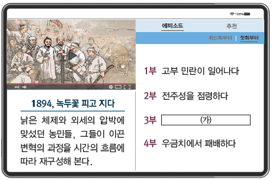
- 남북접이 논산에 집결하다
- 황토현 전투에서 승리하다
- 백산에 모여 4대 강령을 선포하다
- 최시형이 동학의 2대 교주가 되다
- 교조 신원을 요구하는 삼례 집회가 열리다
(정답률: 48%)
30. 다음 상황 이후의 사실로 옳은 것은? [3점]
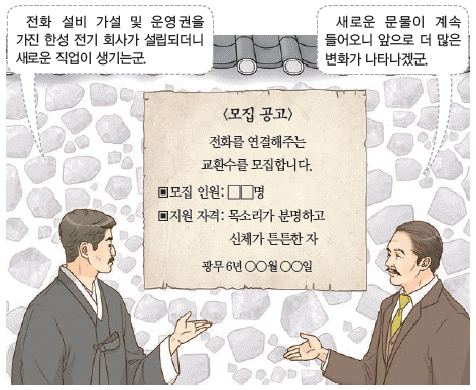
- 알렌의 건의로 광혜원이 세워졌다.
- 박문국에서 한성순보가 발행되었다.
- 무기 제조 공장인 기기창이 설립되었다.
- 서울과 부산을 연결하는 경부선이 개통되었다.
- 우편 사무를 관장하는 우정총국이 처음 설치되었다.
(정답률: 47%)
31. 다음 상황이 전개된 배경으로 옳은 것은? [2점]
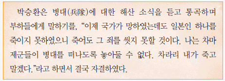
- 정미 7조약이 체결되었다.
- 일제가 1⑤인 사건을 조작하였다.
- 초대 총독으로 데라우치가 부임하였다.
- 기유각서가 일제의 강압에 의해 조인되었다.
- 일진회가 한일 합방을 촉구하는 성명을 발표하였다.
(정답률: 49%)
32. 밑줄 그은 '이 개혁'의 내용으로 옳은 것은? [2점]
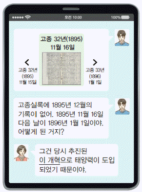
- 지계아문을 설립하였다.
- 대한국 국제를 반포하였다.
- 건양이라는 연호를 제정하였다.
- 개혁 추진 기구로 교정청을 설치하였다.
- 군제를 개편하여 5군영을 2영으로 통합하였다.
(정답률: 49%)
33. 밑줄 그은 '이곳'에서 있었던 민족 운동으로 옳은 것은? [2점]
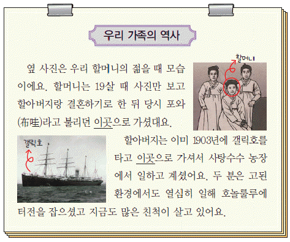
- 대종교 계열의 중광단이 결성되었다.
- 권업회가 조직되어 권업신문을 창간하였다.
- 사회주의 계열의 한인 사회당이 조직되었다.
- 독립군 양성을 위한 신흥 무관 학교가 설립되었다.
- 대조선 국민군단이 조직되어 무장 투쟁을 준비하였다.
(정답률: 46%)
34. 다음 기사가 나오게 된 배경으로 적절한 것은? [1점]
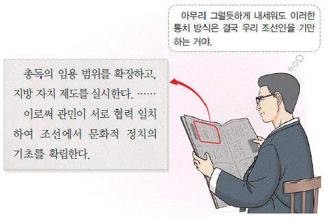
- 3·1 운동이 전국적으로 전개되었다.
- 조선 사상범 예방 구금령이 시행되었다.
- 브나로드 운동이 동아일보를 중심으로 추진되었다.
- 조선 노동 총동맹과 조선 농민 총동맹이 설립되었다.
- 내선일체를 강조한 황국 신민 서사의 암송이 강요되었다.
(정답률: 55%)
35. (가)~(다)를 작성된 순서대로 옳게 나열한 것은? [3점]
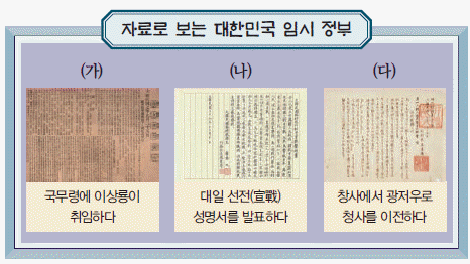
- (가) - (나) - (다)
- (가) - (다) - (나)
- (나) - (가) - (다)
- (나) - (다) - (가)
- (다) - (가) - (나)
(정답률: 31%)
36. (가) 단체에 대한 설명으로 옳은 것은? [1점]
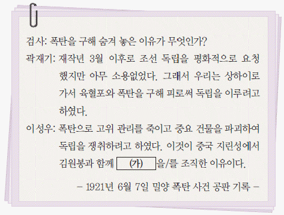
- 조선 혁명 선언을 활동 지침으로 삼았다.
- 일제의 황무지 개간권 요구를 저지하였다.
- 복벽주의를 내세우며 의병 전쟁을 준비하였다.
- 삼균주의를 기초로 하는 건국 강령을 발표하였다.
- 단원인 이봉창이 일왕의 행렬에 폭탄을 투척하였다.
(정답률: 48%)
37. 밑줄 그은 '시기'에 시행된 일제의 정책으로 옳은 것은? [2점]
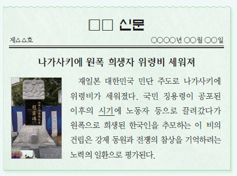
- 애국반을 조직하여 한국인의 생활을 통제하였다.
- 강압적 통치를 목적으로 헌병 경찰 제도를 실시하였다.
- 사회주의자를 탄압하기 위한 치안 유지법을 제정하였다.
- 회사 설립 시 총독의 허가를 받도록 하는 회사령을 공포하였다.
- 근대적 토지 소유권 확립을 명분으로 토지 조사 사업을 시행하였다.
(정답률: 46%)
38. (가)에 대한 설명으로 옳은 것은? [2점]
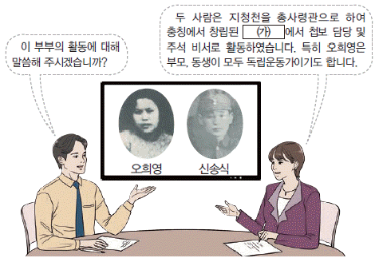
- 영릉가 전투에서 일본군에게 승리하였다.
- 중국 팔로군에 편제되어 항일 전선에 참여하였다.
- 국내 정진군을 편성하여 국내 진공 작전을 추진하였다.
- 중국 관내(關內)에서 결성된 최초의 한인 무장 부대이다.
- 간도 참변 이후 밀산에서 집결하여 자유시로 이동하였다.
(정답률: 32%)
39. 다음 자료의 상황이 나타나게 된 배경으로 적절한 것은? [2점]
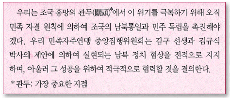
- 허정 과도 정부에서 헌법이 개정되었다.
- 통일 주체 국민 회의에서 대통령이 선출되었다.
- 유엔 소총회에서 남한만의 단독 총선거가 결의되었다.
- 유상 매수, 유상 분배 원칙의 농지 개혁법이 제정되었다.
- 국가 보안법 개정안을 통과시킨 보안법 파동이 일어났다.
(정답률: 59%)
40. (가), (나) 사이의 시기에 있었던 사실로 옳은 것은? [3점]
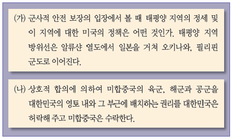
- 좌우 합작 위원회가 출범하였다.
- 여수 순천 10·19 사건이 일어났다.
- 미국 의회에서 트루먼 독트린이 발표되었다.
- 베트남 파병에 관한 브라운 각서가 체결되었다.
- 거제도 포로 수용소에 있던 반공 포로가 석방되었다.
(정답률: 33%)
41. 밑줄 그은 '선거' 이후의 사실로 옳은 것은? [3점]
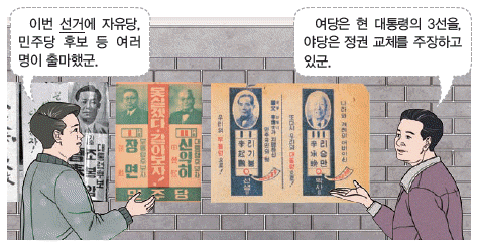
- 국회에서 국민 방위군 사건이 폭로되었다.
- 평화 통일론을 내세우던 진보당이 해체되었다.
- 경찰이 반민족 행위 특별 조사 위원회를 습격하였다.
- 조선 건국 준비 위원회 지부가 인민 위원회로 개편되었다.
- 초대 대통령에 한해 중임 제한을 폐지하는 개헌안이 통과되었다.
(정답률: 32%)
42. 밑줄 그은 '집회'가 열린 시기를 연표에서 옳게 고른 것은? [2점]
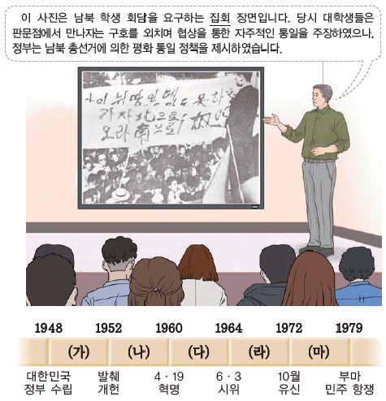
- (가)
- (나)
- (다)
- (라)
- (마)
(정답률: 26%)
43. 다음 명령을 실행한 정부의 경제 정책으로 옳은 것은? [2점]
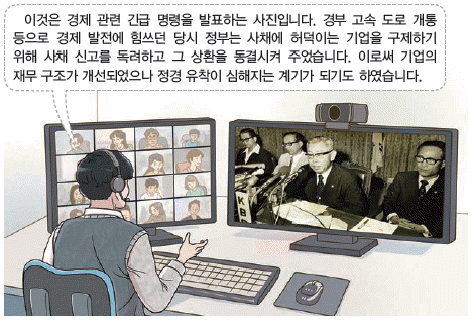
- 제3차 경제 개발 5개년 계획을 추진하였다.
- 미국과 자유 무역 협정(FTA)을 체결하였다.
- 귀속 재산 처리를 위해 신한 공사를 설립하였다.
- 최저 임금 결정을 위한 최저 임금 위원회를 설치하였다.
- 금융 거래의 투명성을 확보하고자 금융 실명제를 실시하였다.
(정답률: 55%)
44. (가) 민주화 운동에 대한 설명으로 옳은 것은? [1점]
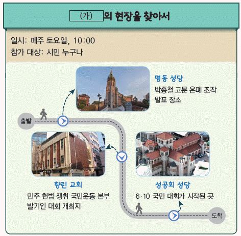
- 신군부의 비상계엄 확대가 원인이 되어 일어났다.
- 관련 기록물이 유네스코 세계 기록 유산으로 등재되었다.
- 3·15 부정 선거에 항의하며 시위대가 경무대로 행진하였다.
- 3·1 민주 구국 선언을 통해 긴급 조치 철폐 등을 요구하였다.
- 호헌 철폐와 독재 타도 등의 구호를 내세운 시위가 확산되었다.
(정답률: 45%)
45. 다음 뉴스가 보도된 시기 정부의 통일 노력으로 옳은 것은? [2점]
- 민족 자존과 통일 번영을 위한 7·7 선언을 발표하였다.
- 최초의 이산가족 고향 방문과 예술 공연단 교환을 실현하였다.
- 남북 정상 회담을 개최하고 6·15 남북 공동 선언을 채택하였다.
- 7·4 남북 공동 성명을 실천하기 위한 남북 조절 위원회를 구성하였다.
- 남북 사이의 화해와 불가침 및 교류·협력에 관한 합의서를 교환하였다.
(정답률: 47%)
46. ㉠~㉤에 대한 학생들의 의견으로 적절하지 않은 것은? [2점]
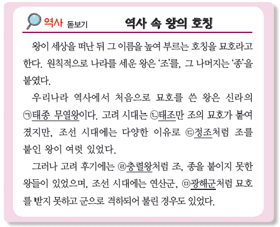
- 갑: ㉠ - 백제를 멸망시키고 통일의 기초를 마련했어요.
- 을: ㉡ - 고려 건국의 위업을 이루었어요.
- 병: ㉢ - 탕평책 등 여러 개혁으로 통치 체제를 재정비했어요.
- 정: ㉣ - 원 황실의 부마가 되었어요.
- 무: ㉤ - 중종반정으로 폐위되었어요.
(정답률: 44%)
47. (가) 신분에 대한 설명으로 옳은 것은? [2점]
- 신라에서 승진에 제한을 받았으며, 득난이라고도 불렸다.
- 고려 시대에 향, 부곡, 소에 거주하였으며, 과중한 세금을 부담하였다.
- 조선 시대에 봉수, 역졸의 업무를 주로 담당하였다.
- 조선 후기에 통청 운동으로 청요직 진출을 시도하였다.
- 조선 순조 때 궁방과 중앙 관서에 소속된 6만여 명이 해방되었다.
(정답률: 50%)
48. 다음 세시 풍속에 대한 탐구 활동으로 가장 적절한 것은? [2점]
- 칠석날의 전설을 검색한다.
- 한식날의 의미를 파악한다.
- 삼짇날의 유래를 알아본다.
- 동짓날에 먹는 음식을 조사한다.
- 단오날에 즐기는 민속놀이를 찾아본다.
(정답률: 47%)
49. 다음 지역에서 있었던 사실로 옳은 것은? [3점]
- 인조가 피신하여 청군과 항전하였다.
- 유생 출신 유인석이 의병을 일으켰다.
- 정문부가 왜군에 맞서 북관대첩을 이끌었다.
- 김광제 등을 중심으로 국채 보상 운동이 시작되었다.
- 왕건이 후백제를 배후에서 견제하기 위해 차지하였다.
(정답률: 40%)
50. (가) 섬에 대한 설명으로 옳지 않은 것은? [1점]
- 안용복이 일본에 건너가 우리 영토임을 주장하였다.
- 영국군이 러시아를 견제하기 위해 불법 점령하였다.
- 러일 전쟁 때 일본이 불법으로 자국 영토로 편입하였다.
- 대한 제국이 칙령을 통해 울릉 군수가 관할하도록 하였다.
- 1877년 태정관 문서에 일본과는 무관한 지역임이 명시되었다.
(정답률: 53%)